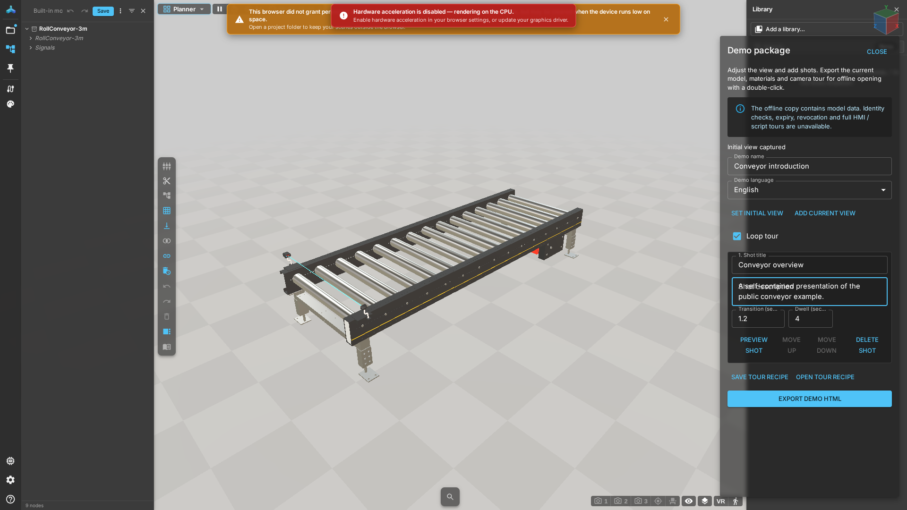

Tours and offline HTML
Prerequisites
Load the complete model with resolved references and self-contained resources. This player does not include full HMI, arbitrary scripts, industrial connections, PDFs or DES. Models are limited to 128 MiB; the HTML is larger because of encoding and the player.
Authoring steps
- Open Demo package from the current document card's more menu. Use a perspective camera.
- Capture the initial view, add shots and enter titles and descriptions.
- Reorder shots, set transition and dwell times, and preview each shot.
- Save a
.demo.jsonrecipe. To resume editing, open the matching model before loading the recipe. - Choose the language, export HTML and wait for the complete download.
- Open the file offline on the recipient device. Test playback, drag takeover, replay and reset.
Expected result
The model and camera tour run independently of the workbench. Dragging stops the tour. Hiding the page pauses playback; returning resumes it. A tour with no shots exports a free-view presentation. The player does not reproduce all workbench environment maps and post effects.
Errors and cancellation
For invalid recipes, check version, shot count and durations. IT must redeploy matching player artifacts after build mismatches. Cancellation prevents late downloads. Retrying waits for existing encoding to finish instead of running concurrent encoders. Follow resource and script restrictions in error messages; an empty model is not a successful export.

Tutorial videos
Tutorial videos · WebM · 163 s · zh-CN VTT · en-US VTT
Written steps
- 0:00 — Open the bundled conveyor example and wait until it is ready.
- 0:23 — Open the current document menu and choose Demo package.
- 0:47 — Set the initial view, add a shot and enter its title and description.
- 1:19 — Save the tour recipe. It does not contain the model; keep the model separately.
- 1:40 — Export demo HTML and wait for the complete download before delivery.
- 2:10 — Open the downloaded file offline. Play the tour, drag to take over, then reset the view.